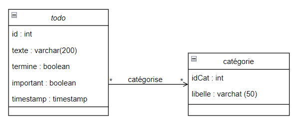
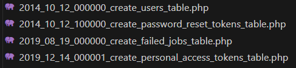
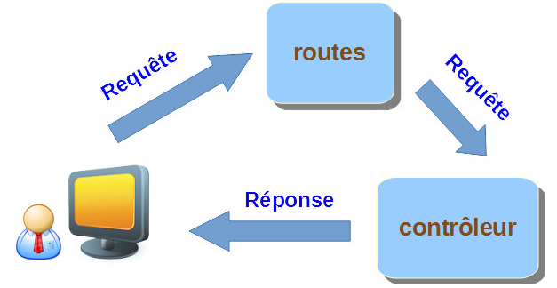
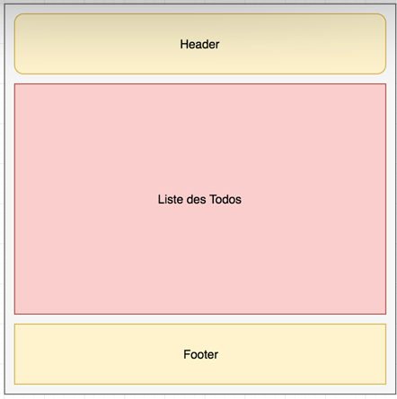
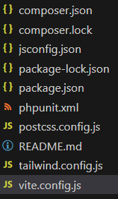

1. Projet ToDo Initialisation⚓︎
Dans ce TP nous allons réaliser une application web, « TODO » ou aussi appelé liste de tâches.
Une TODO List est un procédé qui se veut simple et efficace pour gérer les tâches d'un projet. Ces tâches peuvent être indépendantes ou devoir, au contraire, être accomplies dans un certain ordre. Ces tâches pourront également être catégorisées (pro, perso, famille, ...).
Voilà la liste des fonctionnalités de l’application que l'on va créer :
- Lister les tâches.
- Ajouter une tâche.
- Marquer comme terminé une tâche.
- Suppression d'une tâche.
Technologie
Dans ce TP nous allons utiliser les technologies suivantes :
- Laravel (Framework PHP)
- ORM Eloqent
- Bootstrap 4 (Framework HTML / CSS / JS)
- NodeJS (Utilisation de Webpack)
Initialiser le projet⚓︎
La première étape lors d'un projet Laravel est la création de la structure avec une simple ligne de commande, dans notre cas : ✋ Attention, le projet va être créé dans le dossier todo2024 dans le dossier courant.
composer create-project --prefer-dist laravel/laravel todo2024
Question
Où sont les librairies ?
Les vendor représentent les bibliothèques tierce qui sont nécessaires au projet mais qui sont des ressources externe, c'est notamment le nom utiliser par le dossier ou sont stocker les dépendances téléchargées via le package manager le plus utiliser de php : composer
Question
Quel est l'intérêt à votre avis d'utiliser un outil pour initialiser un projet ?
Gain de temps, d’efficacité, non redondance des taches, automatisation de ce qui peut l’être.
Configurer le projet
Configurer le projet : .env
Le projet qui vient d'être créé est « générique » c'est à dire qu'il ne possède aucune personnalisation et peut donc servir de base quelques soit votre développement.
La première étape est donc d'éditer le fichier .env pour configurer les options de base de votre projet tel que :
- Le nom : ToDoList
- Le type de base de données
- …
Sécurité
 Créer une base de données
Créer une base de données todo2024 sous MySQL
 créer un user de base de données à périmètre restreint pour votre application
créer un user de base de données à périmètre restreint pour votre application
 Mettre à jour le
Mettre à jour le .env
CREATE USER 'nouveau_utilisateur'@'%' IDENTIFIED BY 'mot_de_passe';
GRANT ALL PRIVILEGES ON `todo2024`.* TO 'nouveau_utilisateur'@'%s';
FLUSH PRIVILEGES
Le reste du fichier .env : Nous n'allons pas toucher aux autres paramètres mais certains sont tout de même intéressants. Je vous laisse donc consulter la documentation en ligne de laravel.
Conception de la base de données⚓︎

Ce qui donnera le calcul du MPD suivant :
TODO (id, texte, termine,important timestamp)
CATEGORIE(idcat, libelle)
CATEGORISE (id,idcat)
Création de la « migration »⚓︎
Laravel utilise un ORM pour manipuler la base de données. Pour rappel un ORM est Un mapping objet-relationnel (en anglais object-relational mapping) est une technique de programmation informatique qui crée l'illusion d'une base de données orientée objet à partir d'une base de données relationnelle en définissant des correspondances entre cette base de données et les objets du langage utilisé.
L'ORM utilisé par Laravel est Eloquent, il est à la fois puissant et relativement simple. Autrement dit avec un ORM dans la plus part des cas vous n'écrivez plus de requête SQL mais vous manipulez des objets représentant la base de données.
Comme pour la création du projet, la création de la définition de vos table va se faire via une requête dans votre terminal en utilisant Artisan.
php artisan make:migration create_todos_table --create=todos
INFO Migration [C:\wamp64\www\todo2024\database\migrations/2023_11_21_084423_create_todos_table.php] created successfully.
L’option --create=todos dans la première méthode permet d’indiquer le nom du modèle de la table à créer.
La commande vient de créer un nouveau fichier dans le dossier database/migration. Dans mon cas le fichier se nomme :
/todo2024/database/migrations/2023_11_21_084423_create_todo_table.php
contenu du fichier
<?php
use Illuminate\Database\Migrations\Migration;
use Illuminate\Database\Schema\Blueprint;
use Illuminate\Support\Facades\Schema;
return new class extends Migration
{
/**
* Run the migrations.
*/
public function up(): void
{
Schema::create('todos', function (Blueprint $table) {
$table->id();
$table->timestamps();
});
}
/**
* Reverse the migrations.
*/
public function down(): void
{
Schema::dropIfExists('todos');
}
};
✋ Le contenu du fichier créé est fictif, il est là pour illustrer comment travailler. Nous allons le modifier pour mettre les informations relatives à notre table.
Questions
Il y a d'autres fichiers dans votre répertoire de migration. A quoi servent ils ? )
- table users : c’est une migration de base pour créer une table des utilisateurs,
- table password_resets : c’est une migration liée à la précédente qui permet de gérer le renouvellement des mots de passe en toute sécurité.
Questions
Quels sont les champs par défaut dans la création d’une table simple ?
et
$table->integer('id');
$table->timestamps();
Nous allons définir notre schéma pour y ajouter les 3 colonnes qui nous serons utiles texte, termine et important. L'ORM étant une librairie objet, la définition de nouveaux champs se fait via une méthode, dans notre cas :
```php
$table->integer('id');
$table->string('texte');
$table->boolean('termine')->default(0);
$table->boolean('important')->default(0);
#Déclaraction de la clé primaire
$table->primary('id');
```
Ajouter les champs dans la méthode up du fichier.
fonction up
public function up(): void
{
Schema::create('todos', function (Blueprint $table) {
$table->integer('id');
$table->string('texte');
$table->boolean('termine')->default(0);
$table->boolean('important')->default(0);
$table->primary('id');
$table->timestamps();
});
}
Création en base⚓︎
Maintenant que le script est terminé, nous allons indiquer à Laravel d'effectuer « la migration » c'est-à-dire de transformer votre définition PHP en instruction SQL pour créer réellement la base de données.
Remplacer dans config/database.php
'charset' => 'utf8mb4',
'collation' => 'utf8mb4_unicode_ci',
#Par
'charset' => 'utf8',
'collation' => 'utf8_unicode_ci',
'engine' => null,
#par
'engine' => 'InnoDB',
Checklist
- Terminal :
C:\wamp64\www\todo2024> - base de données
todo2024créée - user base de donnée créé
- .env mis à jour
- métode
upde la migration mise à jour
Retour dans la ligne de commande :
C:\wamp64\www\todo2024>php artisan migrate:fresh
Dropping all tables ..................................................................................................... 146ms DONE
INFO Preparing database.
Creating migration table ................................................................................................. 16ms DONE
INFO Running migrations.
2014_10_12_000000_create_users_table ..................................................................................... 21ms DONE
2014_10_12_100000_create_password_reset_tokens_table ..................................................................... 13ms DONE
2019_08_19_000000_create_failed_jobs_table ............................................................................... 22ms DONE
2019_12_14_000001_create_personal_access_tokens_table .................................................................... 21ms DONE
2023_11_21_084423_create_todo_table ...................................................................................... 21ms DONE
A faire
Faites la même chose avec les tables CATEGORIES et CATEGORISE Sachant que CATEGORISE possède également deux clés étrangères.
La difficulté ici est de créer la bonne relation entre clés primaires et clés étrangères.
Pour rappel, en Base de données, on ne peut référencer un champ en clé étrangère vers une clé primaire que si les deux champs sont exactement du MEME type. or ici, si on utilise id() pour catégorie, on aura du mal à construire la clé étrangère dans la table CATEGORISE
public function up(): void
{
Schema::create('categories', function (Blueprint $table) {
$table->integer('idcat');
$table->string('libelle');
$table->primary('idcat');
$table->timestamps();
});
}
public function up(): void
{
Schema::create('categorise', function (Blueprint $table) {
$table->integer('idcat');
$table->integer('idtodo');
$table->foreign('idcat')->references('idcat')->on('categorie');
$table->foreign('idtodo')->references('id')->on('todos');
$table->primary(['idcat', 'idtodo']);
$table->timestamps();
});
}
Votre base de données est maintenant prête à être utilisée. Vous pouvez aller voir le contenu grâce à phpMyAdmin. Verifier votre structures et vos contraintes.
Cours
L’ORM eloquent permet de créer une correspondance entre les classes PHP et la base de données. On peut créer une classemaTable associée à une table maTable. On pourra accéder aux colonnes de la table au travers des propriétés de la classe et bénéficier de méthodes pour charger un élément ou une liste d’éléments, enregistrer, mettre à jour …
Exemple
Exemple de commande pour manipuler facilement des retours de requêtes en base de données. Tout est Objet !
$user = User ::find(5) ;
Echo $user->name ;
$user->age=32 ;
$user->save() ;
Le modèle⚓︎
Maintenant que nous avons fait le script de création / migration, nous allons définir notre model.
$ php artisan make:model Todos
 La commande va créer le fichier
La commande va créer le fichier Todos.php dans le dossier app/.
Ajouter dans la class Todos.php :
```php
protected $fillable = ['texte', 'termine', 'important'];
```
⚠️ Cette propriété est optionnelle, elle permet vous autorisera plus tard à faire du « mass-assignment » c'est à dire à créer un objet « Todos » depuis par exemple le POST HTTP.
A faire
Faites la même chose avec les tables CATEGORIE
Inutile d'ajouter des attributs fillable pour cette table puisque nous ne créerons pas de catégorie via l'interface Web.
Relation Many To Many⚓︎
On va avoir besoin de déclarer un todo peut appartenir à plusieurs catégories et une catégorie classifie plusieurs todos. La relation est symétrique.
On ajoute l'espace de noms nécessaire à la gestion de cette relation dans les 2 models.
use Illuminate\Database\Eloquent\Relations\BelongsToMany;
Puis à l'intérieur de la classe, on ajoute les méthodes d'association
Dans Todos.php
public function categories(): BelongsToMany
{
return $this->belongsToMany(Categories::class);
}
Dans Categories.php
public function todos(): BelongsToMany
{
return $this->belongsToMany(Todos::class);
}
On déclare ici avec la méthode todos (au pluriel) qu’une catégorie appartient à plusieurs (belongsToMany) todos (Todos). On aura ainsi une méthode pratique pour récupérer les todos d’une catégorie. Idem pour les catégories.
Le controller⚓︎
Maintenant que nous avons la migration et le model de notre base de données, nous allons créer le controller. Pour rappel le controller va faire « le lien » entre la base de données et les appels HTTP. C’est ici que nous allons mettre la logique métier de notre application.
Rôle
La tâche d'un contrôleur est de réceptionner une requête (qui a déjà été triée par une route) et de définir la réponse appropriée, rien de moins et rien de plus. Voici une illustration du processus : 
- Les contrôleurs servent à réceptionner les requêtes triées par les routes et à fournir une réponse au client.
- Artisan permet de créer facilement un contrôleur.
- Il est facile d'appeler une méthode de contrôleur à partir d'une route.
- On peut nommer une route qui pointe vers une méthode de contrôleur.
Pour commencer nous allons créer « la structure de base » de notre controller.
php artisan make:controller TodosController
php artisan make:controller CategoriesController
Le fichier TodosController.php viens d'être créé dans le chemin suivant app/Http/Controllers/.
Notre code est prêt. Nous allons créer les méthodes permettant la manipulation de notre base de données tout en répondant à nos problématique d'interface (liste, création, terminer, suppression CRUD).
CRUD).
Nous allons écrire une méthode pour chaque action. Avec les différentes conditions nécessaires au bon fonctionnement de l'application.
La méthode « Liste »⚓︎
La méthode liste est certainement la plus simple, nous allons faire appel à la méthode all() de Eloquent.
✋ Dans un premier temp nous n'allons pas integrer la base de données, mais uniquement définir notre méthode. Et tester
l'interface de notre projet.
public function liste(){
return "Liste";
}
/ (page d'acccueil du projet), pour ça nous allons remplacer le contenu du fichier routes/web.php par :
use Illuminate\Support\Facades\Route;
use App\Http\Controllers\TodosController;
Route::get('/', [TodosController::class, 'liste']);

Vous pouvez relancer votre serveur de test, vous devez maintenant voir afficher « Liste ».
Créer les templates⚓︎
Nous avons donc maintenant :
- [ ] La structure Laravel.
- [ ]La définition de notre base de données.
- [ ] Une page d'accueil valide
- [ ] Un controller un peu vide
Nous allons donc pouvoir commencer la création des vues. L'organisation du code est quelques choses d'important, elle n'est pas à négliger. Un code organisé est un code agréable à rédiger. Notre vue va être découpée en 3 partie :

Pourquoi le découpage en « 3 templates » est-il important ?
On retrouve les besoins de découpage que l’on pouvait avoir avec un PHP brut avec les fonctions include ou require. On peut vouloir inclure une portion de code blade pour gérer les affichages d’erreurs liés aux formulaires dans chaque page qui en possèdera un. Ici on mutualisera le code statique commun à plusieurs pages.
Quelle est l'avantage pour le développeur ?
Réutilisation de code, maintenabilité.
Le template principal⚓︎
Nous allons commencer par définir notre « Template principal » celui-ci va contenir l'ensemble des éléments partagés sur toutes nos pages à savoir :
• Les JS
• Les CSS
• La structure commune
template.blade.php
<html>
<head>
<meta charset="utf-8">
<meta name="viewport" content="width=device-width, initial-scale=1">
<meta name="csrf-token" content="{{ csrf_token() }}">
<title>@yield('title')</title>
<link href="{{ asset('css/app.css') }}" rel="stylesheet">
<script type="text/javascript" src="{{ asset('js/app.js') }}"></script>
</head>
<body>
<nav class="navbar navbar-expand-md navbar-dark bg-dark">
<a class="navbar-brand" href="#">Ma Todo List</a>
</nav>
@yield('content')
</body>
</html>
Pourquoi le fichier est-il nommé ….blade.php ?
Il utilise le moteur de template blade. Contrairement aux autres moteurs de templates PHP populaires, Blade ne vous empêche pas d'utiliser du code PHP simple dans vos vues. En fait, toutes les vues Blade sont compilées dans du code PHP brut et mises en cache jusqu'à ce qu'elles soient modifiées, ce qui signifie que Blade n'ajoute pratiquement aucune surcharge à votre application.
À quoi correspond {{ asset('…') }} ?
The asset function generates a URL for an asset using the current scheme of the request (HTTP or HTTPS):
$url = asset('css/style.css ');
/mon-site/ma/route/web/web/css/style.css
À quoi correspond la directive « yield »? En quoi est-ce très important ?
Mot clé permet de déterminer la partie ou placé le code à sustituer.
Il permet de gérer l’héritage et l’inclusion de modèle.
Est-il possible de définir une « zone » où d'autre ressources JS/CSS seront insérées lors de l'exécution ?
Voir la
Blade propose un système pour ajouter des éléments de plusieurs endroits dans une pile avant l’affichage. Il faut utiliser les directives @push, @endpush, @stack.
Composant VITE⚓︎
petit aparté pour détailler l'utilisation des assets front-end (JavaScript / CSS) dans le cadre de Laravel. Lorsque l'on commence à travailler sur du JavaScript on a très rapidement besoin d'outils comme des bundlers pour travailler efficacement. Malheureusement ces outils sont souvent pensés pour des sites web statiques et l'intégration avec une application backend n'est pas forcément évident.
Lors de son installation Laravel dispose déjà d'une configuration permettant d'utiliser le bundler Vite avec un fichier package.json pré-rempli.
Installer au préalable node.js ici
composer require laravel/breeze --dev
php artisan breeze:install vue
npm install
npm install --save-dev vite laravel-vite-plugin
npm install --save-dev @vitejs/plugin-vue
On trouve aussi un nouveau fichier de configuration 
Installation de Bootstrap 5⚓︎
composer require laravel/ui
npm i --save bootstrap @popperjs/core
npm install bootstrap-icons
npm install
npm run build
app.js, ajouter
import './bootstrap';
import 'bootstrap/dist/css/bootstrap.min.css';
import 'bootstrap-icons/font/bootstrap-icons.css';
import '@popperjs/core';
Dans votre template, ajouter dans le head la ligne @vite(['resources/js/app.js'])
 tester
tester
pour tester vos manips, ajouer du code bootstrap dans votre template.
- [ ] Mettre en commentaire la route vers le controller Todo
- [ ] Créer une route vers la vue template Route :: view ('/test', 'template');
- [ ] Dans le template, mettre mettre le code ci dessous contenant du bootstrap
<nav class="navbar navbar-expand-md navbar-dark bg-dark">
<a class="navbar-brand" href="/">Ma Todo List</a>
<a class="navbar-brand btn btn-primary" href="liste"><i class="bi bi-app"></i>Liste</a>
<a class="navbar-brand btn btn-danger" href="compteur">Compteur</a>
</nav>
Liste des todos⚓︎
Maintenant que nous avons défini notre template de base nous allons pouvoir définir notre page principale, la page « liste des todos ». Une fois terminée celle-ci va ressembler à :
Avant de commencer la réalisation de ce template, regardons ce que l'on peut y voir :
- Un formulaire « form »
- Une « liste »
Nous allons donc avoir besoin de composant bootstrap. Première étape regarder la documentation de bootsrap !
Quels composants (components) allons-nous avoir besoins ?
Gestion des messages d’erreur pour gérer la saisie dans le formulaire
Est-ce que ce sont les seuls ?
Définition du template « Liste » / « Home »
Nous allons créer un 2nd template celui qui va être chargé d'afficher la liste des todos. Créér un nouveau fichier resources/views/home.blade.php et y mettre le contenu suivant :
home.blade.php
@extends("template")
@section("title", "Ma Todo List")
@section("content")
<div class="container">
<div class="card">
<div class="card-body">
<!-- Action -->
<form action="{{ route('todo.save') }}" method="POST" class="add">
@csrf <!-- <<L'annotation ici ! -->
<div class="input-group">
<span class="input-group-addon" id="basic-addon1"><span class="oi oi-pencil"></span></span>
<input id="texte" name="texte" type="text" class="form-control" placeholder="Prendre une note..." aria-label="My new idea" aria-describedby="basic-addon1">
@if (session('message'))
<p class="alert alert-danger">{{ session('message') }}</p>
@endif
</div>
<div class="priority-choice">
Importance :
<input type="radio" name="priority" id="highpr" value="0" checked><label for="highpr"><i class="bi bi-reception-1"></i></label>
<input type="radio" name="priority" id="lowpr" value="1"><label for="lowpr"><i class="bi bi-reception-4"></i></label>
<button type="submit" class="btn btn-primary"><i class="bi bi-save"></i></button>
</div>
</form>
<!-- Liste -->
<ul class="list-group">
@forelse ($todos as $todo)
<li class="list-group-item">
<!-- Affichage de la priorité -->
@if ($todo->important == 0)
<i class="bi bi-reception-1"></i>
@elseif ($todo->important == 1)
<i class="bi bi-reception-4"></i>
@endif
<!-- Affichage du texte -->
<span>{{ $todo->texte }}</span>
<!-- Action à ajouter pour Terminer et supprimer -->
@if ($todo->termine === 0)
<!-- Si un ToDo n'est pas terminé, Action à ajouter pour terminer -->
<a href="{{ route('todo.done', ['id' => $todo->id]) }}" class="btn btn-success"><i class="bi bi-bag-check"></i></a>
<!--<button class="btn btn-primary btn-lg"><span class="fa fa-user"></span><br>Terminer</button>-->
@elseif ($todo->termine === 1)
<!-- Si un ToDo est terminé, Action à ajouter pour supprimer -->
<a href="{{ route('todo.delete', ['id' => $todo->id]) }}" class="btn btn-danger"><i class="bi bi-trash3"></i></i></a>
@if (session('validation'))
<p class="alert alert-success">{{ session('validation') }}</p>
@endif
@endif
@if ($todo->important == 0)
<!-- Action à ajouter pour monter la priorité -->
<a href="{{ route('todo.raise', ['id'=> $todo->id]) }}"><i class="bi bi-arrow-up-circle"></i></a>
@elseif ($todo->important == 1)
<!-- Action à ajouter pour descendre la priorité -->
<a href="{{ route('todo.lower', ['id' => $todo->id]) }}"><i class="bi bi-arrow-down-circle"></i></a>
@endif
</li>
@empty
<li class="list-group-item text-center">C'est vide !</li>
@endforelse
</ul>
</div>
</div>
</div>
@endsection
tip
Vous n'aurez pas besoin de tout le contenu du home.blade.php dans un premier temps.
Je vous conseille de mettre de côté ce code et de dans le home.blade.php de supprimer de :
<!-- Action à ajouter pour Terminer et supprimer -->
@if ($todo->termine === 0)
@elseif ($todo->important == 1)
<!-- Action à ajouter pour descendre la priorité -->
<a href="{{ route('todo.lower', ['id' => $todo->id]) }}"><i class="bi bi-arrow-down-circle"></i></a>
@endif
@extends ? À quoi sert cette directive, pourquoi « template »?
Modifier le titre affiché dans la barre.
À quoi correspond le @forelse … @empty … @endforelse?
Boucler sur la collection de Todos et afficher chaque Todo
Recap
Nous avons :
- Le modele.
- Le contrôleur.
- Les templates (template et home).
Il faut maintenant assembler l'ensemble pour que votre page s'affiche lors d'une requête HTTP.
Création des routes⚓︎
La définition des routes se fait dans le fichier routes/web.php,
décommenter Route::get('/', [TodosController::class, 'liste'])->name('todo.liste');
À quoi correspond la notation TodosController@liste ?
Lien vers le controller Todos
Tester
Vous voyez « Liste » ? C'est 
Affichage de la liste⚓︎
On va modifier la méthode liste() pour qu'elle appelle la bonne vue ici home et qu'elle aille chercher la collection des todos en base :
Code de la fonction liste
use App\Models\Todos;
//Liste
public function liste()
{
return view("home", ["todos" => Todos::all()]);
}
Tester
- Créer un todo dans la base de donnée ...
 Rafraichissez la page, vous devez maintenant voir votre texte
Rafraichissez la page, vous devez maintenant voir votre texte 
Sauvegarde du formulaire et enregitsrement en base⚓︎
Etape 1 : céer la fonction Save dans le controleur⚓︎
Pour utiliser les fonctionnalités Eloqent, vous pouvez consulter la documentation ici.
fonction save
public function saveTodo(Request $request){
$texte = $request->input('texte');
if($texte){
$todo = new Todos();
$todo->texte = $texte;
$todo->termine = 0;
$todo->Importance = 0;
$todo->save();
return redirect()->route('todo.liste');
} else{
return redirect()->route('todo.liste')->with('message', "Veuillez saisir une note à ajouter");
}
}
Vous prendrez le temps de remarquer que ce code gère les messages d'erreur avec Bootstrap.
On "attrape" l'erreur en testant le champ texte, qui doit ici être non vide et on ajoute un élément à la route.
Element qui sera mappé avec la vue home et plus précisement avec le champ message
@if (session('message'))
<p class="alert alert-danger">{{ session('message') }}</p>
@endif
Il faut ajouter le lien vers la fonction saveTodo du controleur.
Route::post('/action/add', [TodosController::class, 'saveTodo'])->name('todo.save');
<form action="{{ route('todo.save') }}" method="POST" class="add">
Erreur à traiter
Il manque le champ 'id' dans la requete d'insertion.
Il faut passer le champ id en autoIncrément et relancer le fresh de migration.
$table->integer('id')->autoIncrement();
#$table->primary('id');
User Story⚓︎
User story 1 : save Todo : traiter le champ Important "Priorité haute/faible"⚓︎
Adaptez votre Controleur pour prendre en compte le champ Important.
solution
Modifier la fonction "Save" du contrôleur
public function saveTodo(Request $request){
$texte = $request->input('texte');
$button = $request->input('priority');
if($texte){
$todo = new Todos();
$todo->texte = $texte;
$todo->termine = 0;
#Gestion du bouton Important
if($button=='highpr'){
$todo->Importance = 1;
} elseif($button=='lowpr'){
$todo->Importance = 0;
}
$todo->save();
return redirect()->route('todo.liste');
} else{
return redirect()->route('todo.liste')->with('message', "Veuillez saisir une note à ajouter");
}
}
User story 1 : Baisser l'importance d'un toDo.⚓︎
Besoin : A la saisie, on peut choisir l'importance d'un Todo.
Fonctionnalité : Pouvoir ajuster L'importance de chaque ToDo
User story 2 : Passer un ToDo à Terminé.⚓︎
User Story 3 : Supprimer un ToDo⚓︎
 On ne peut pas supprimer un Todo qui n'est pas terminé
On ne peut pas supprimer un Todo qui n'est pas terminé
User Story Bonus : Statistiques⚓︎
Ajouter une page qui dénombre les Todos Non terminés et les Todos terminés.